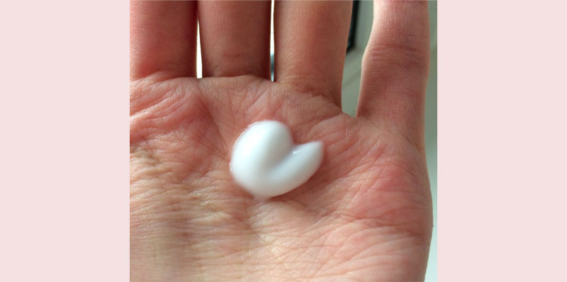

Routines Beautélire en 5 min.
LIFTING
Le temps nous change. Les rides deviennent plus profondes et la peau n'est pas aussi élastique et radieuse qu'il y a quelques années. Quelqu'un accepte les changements naturels, mais la plupart des femmes veulent rester jeunes le plus longtemps possible. Par conséquent, de grandes quantités sont dépensées pour des visites régulières chez l'esthéticienne, l'achat de produits de soins coûteux et les services des meilleurs chirurgiens plasticiens. Et si je vous disais qu'il existe un moyen d'arrêter le processus de vieillissement naturellement? Après tout, le plastique ne rend pas les gens plus jeunes, il les rend différents. Je vais vous dire comment aligner la structure et resserrer la peau, enlever les poches sous les yeux et donner un aspect frais, en utilisant un seul outil.

Au début, je veux vous montrer l'un des milliers de commentaires reconnaissants. Ma patiente a détaillé son histoire. Je n'aurais pas pu lui dire mieux.

Quand j'ai été couverte de rides profondes, il est devenu honteux de porter un décolleté, et le visage ne se ferme pas avec des vêtements. Mes crèmes ont cessé d'aider, il y avait un besoin de chercher d'autres moyens de résoudre le problème.
Mes finances ne me permettent pas de dépenser de l'argent pour une esthéticienne. Sur Internet, j'ai commencé à chercher différents moyens anti-âge et techniques de massage du visage. J'ai essayé beaucoup de choses, en particulier les masques de ma propre production. L'effet n'était pratiquement pas.
En conséquence, j'ai cessé d'utiliser les conseils du peuple et j'ai commencé à chercher une réponse parmi les spécialistes. Donc, je suis tombé sur un article où un cosmétologue a parlé du mal et de l'inefficacité de nombreuses crèmes coûteuses. Je suis devenu intéressé et j'ai décidé de m'inscrire à elle pour une consultation en ligne.
Dans le processus, l'esthéticienne m'a suggéré d'essayer une nouvelle crème . Il a récemment été publié par une société de cosmétiques de premier plan, mais est déjà devenu populaire auprès des stars, des blogueurs et des professionnels de la beauté.
La crème a deux énormes avantages – la polyvalence et la composition naturelle. La crème convient aux yeux, au visage et au cou. La composition comprend un grand nombre de composants minéraux naturels et d'oligo-éléments qui améliorent non seulement l'état de la peau, mais éliminent également les rides qui ont empoisonné ma vie. Et surtout, acheter une crème qui élimine les imperfections dans toutes les zones à problèmes – beaucoup plus rentable.
La composition de la crème aide à produire du collagène. Avec l'âge, cette fonction s'estompe et la crème aide la peau à se renouveler à 20 ans. J'ai immédiatement apprécié l'effet. n'obstrue pas les pores, mais les nettoie et les rétrécit au contraire. Après quelques jours, j'ai réalisé que ma peau pendant la journée a cessé de grossir et de sécher (j'ai combiné). Comme un résultat en deux semaines: hydraté et en forme.
Chaque jour, je regardais attentivement mes rides. Quelles ont trouvé. Et quand j'ai terminé le cours, j'ai jeté des paquets vides de crème pendant 15 ans.
Je vous suis reconnaissante de m'avoir révélé un secret de jeunesse aussi accessible. Maintenant, je n'utilise que ” .

Je suis toujours heureux de recevoir des lettres de remerciement aussi chaleureuses. Je peux donner beaucoup d'exemples similaires. Voici, par exemple, Sandrine, elle a 45 ans.
Elle est venue en consultation pour ralentir le vieillissement. Je lui ai fait un peeling et appliqué un masque anti-âge. Maison conseillé d'utiliser la crème . Trois mois plus tard, la patiente est venue me remercier. Qu'est-ce qui a changé pendant ce temps? Tout d'abord, la couche supérieure “morte” de l'épiderme est partie, la circulation sanguine est rétablie. Cela a permis à la substance utile de la crème de pénétrer dans les couches profondes de la peau. Les poches sous les yeux ont diminué, les rides mimiques profondes, l'ovale du visage s'est resserré, les paupières se sont levées. La qualité de la peau est devenue beaucoup mieux, car la sécheresse et les taches pigmentaires ont disparu.

Marie dans ses 42 ans était très insatisfaite de son apparence. Sécheresse, rides profondes, irrégularités et poches. Une correction progressive a été prévue en combinaison avec la biorevitalisation, les mésonites, les botulotoxines, les peelings dans une certaine séquence. Pour les soins à domicile, j'ai conseillé . Mais en raison de problèmes de santé, la patiente n'a pas pu venir et n'a utilisé que de la crème pendant trois mois. Les résultats ont dépassé non seulement elle, mais toutes mes attentes. Les rides mimiques, la pigmentation et la sécheresse ont disparu, la structure de la peau et le teint ont été améliorés, sans procédures cosmétiques supplémentaires.

Après une telle expérience, j'ai commencé à conseiller à de nombreux patients qui ont des difficultés avec les soins de la peau.
Beaucoup de femmes n'ont pas la possibilité de visiter un cosmétologue et de dépenser de l'argent pour la correction au laser, la mésothérapie, les charges, la biorevitalisation et d'autres procédures. pas pire que les soins professionnels active la production de collagène de la peau, la restauration de sa couche par couche et rendant les rides moins visibles. Et surtout, la crème est disponible pour tout le monde et vous pouvez l'acheter non seulement auprès d'un cosmétologue, mais directement auprès du fabricant.
Aujourd'hui, je veux vous donner un rabais personnel sur l'achat de crème. Vous pouvez le commander avec une réduction de 50%. J'espère que ce remède changera la vie de quelqu'un d'autre pour le mieux.